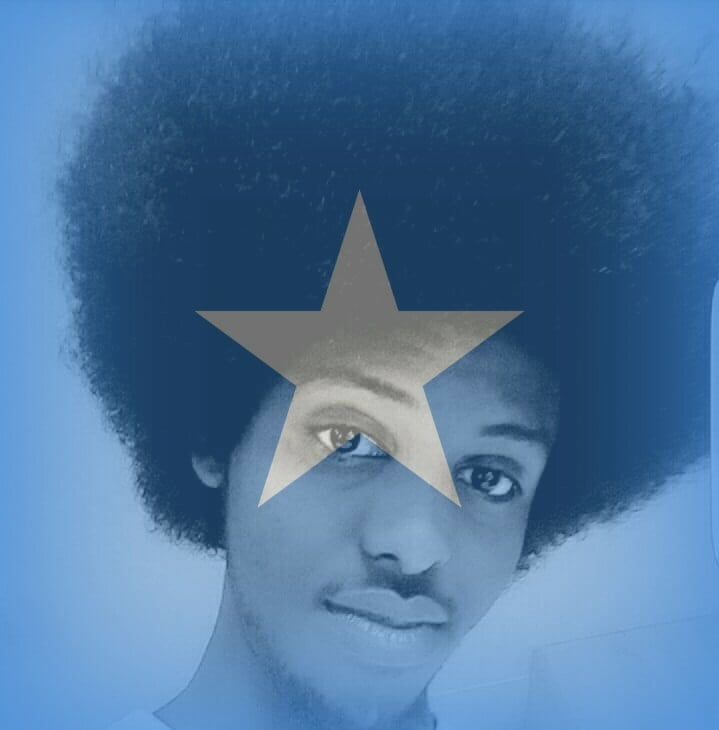

About Me
Iam Mohamed Abdinasir Osman,born in Mogadishu the capital city of Somalia, i'm 20 years old, I have abig Family consisting of 5 siblings and my step-mam three of my siblings are my halfbrothers i'm the oldest of the both families. my Family are currently living in Eritrea as asylum seekers since 2007.
Educational Background
our Family have Educational Background because of my father. he was well educated and he didn't like to see in his Family none-educated people, he used to teach us at home after his work and i was regestred in school at the age of 6 in my 5th class my father passed away. we went Eritrea and i contiued my school from junior school and learned in Eritrea up to the secondry then i started my journey to Euroupe . After arriving here germany I had always in mind to continue my studies and i get the chance to join vocational trainig which i wll recieve what they call hauptschule abschluss. i'm also currently attending programing school called Redi school. i'm about to finish my first course with ReDi school and for the next months i'm willing to get where i can make my Ausbildung.